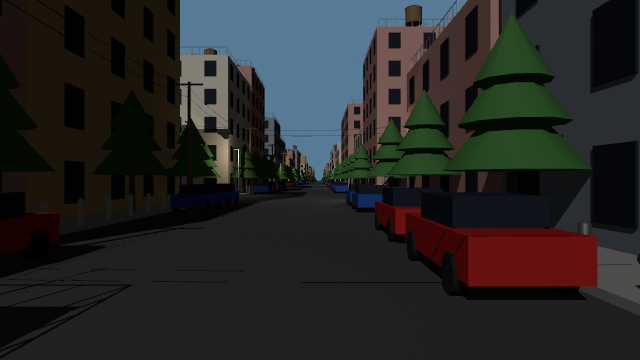
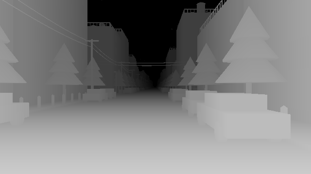
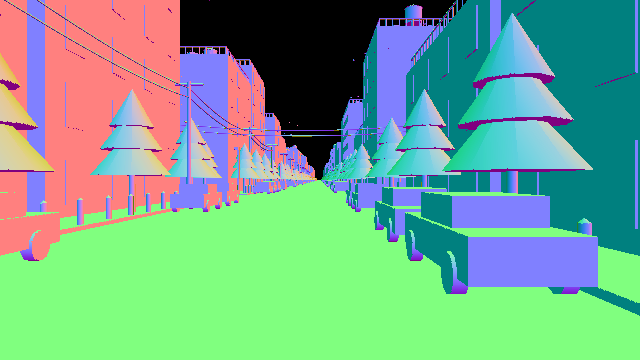
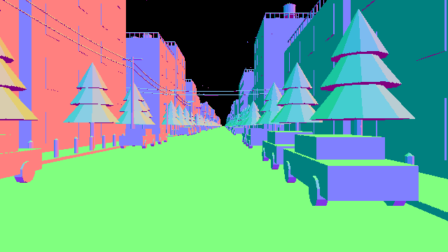
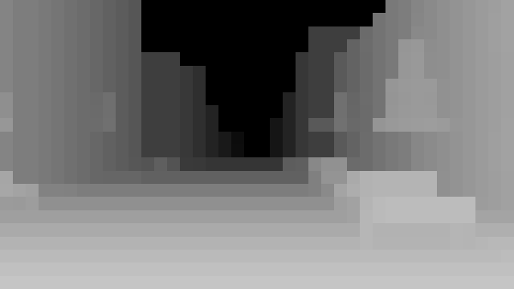
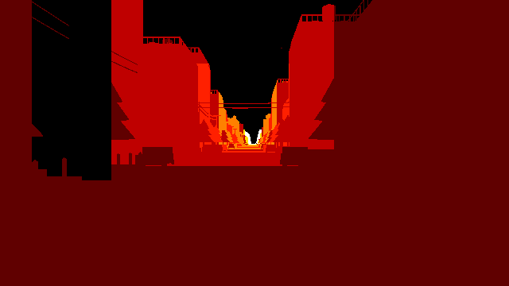
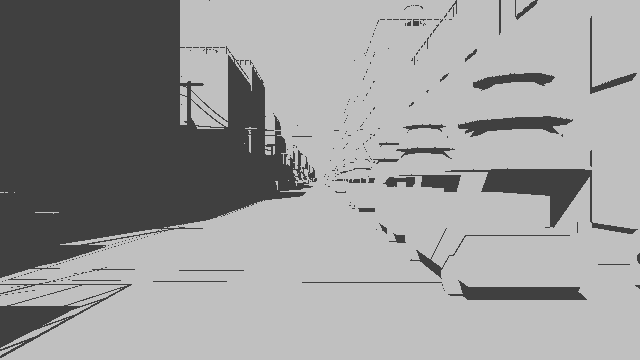
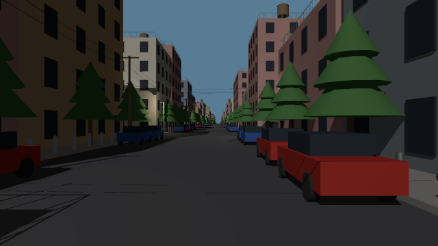

src/render/buffer_view_pass.rsA pass that ships off: with the buffer_view Render switch naming one of the frame's buffers, one triangle over the target, after the tonemapping pass, writes that buffer there as an image, in one fixed mapping to colour, in place of the frame's display colour. A capture asks for it by name, so the depth target, the Surface normals, the depth pyramid, the Froxel lists, the Shadow mask and the HDR target of a frame can each be looked at.
Describes main at 72d70450 (2026-11-28). A change to the pass rewrites this page and moves the commit; nothing is appended. Read first: MSAA for the four samples a pixel of the depth target holds, The depth pre-pass for the depth and the Surface normals, The shadow mask pass for the mask's bits, The HDR target for what the lit pass resolves.
praxis capture town <png> --buffer <name>A capture is deterministic, so each view below is the same frame of town, its Golden's, drawn once per view: together they show what each step of the frame left behind at one moment.

target. The frame as displayed, and the default: no view.
depth. Nearer is lighter; the sky, where nothing is drawn, is black.
normals. The interpolated normal: the road, facing up, is green.
triangle-normals. Each triangle's own normal: the trees' cones show their facets.
depth-pyramid:3. Level 3 of the depth pyramid: each texel the farthest depth over its share of the screen.
point-lights. How many point lights each pixel's Froxel lists: none at the left wall, more down the street, where the Froxels are deeper.
shadow-mask. Dark where the sun is hidden from the pixel's nearest surface.
hdr. The HDR target's exposed colour with no tone curve.town at 640×360, as praxis capture town <png> --buffer <name> writes each on the Apple M4 Pro.
| Name | Buffer | Mapping to colour |
|---|---|---|
target | the target | none: the frame's display colour |
depth | the depth target, each pixel's nearest sample | grey, 1 over 1 plus the view depth in metres over 16; black where nothing is drawn |
normals, triangle-normals | the Surface normals at that sample | the normal's three components from −1 to 1 as red, green and blue; black where nothing is drawn |
depth-pyramid, with a level after a colon | one level of the depth pyramid, level 0 unless named, the coarsest past the last | depth's grey, each texel a block |
point-lights | the Froxel lists | the count of the pixel's Froxel as heat: black at none, through red and yellow to white at 8 or more |
shadow-mask, with a light after a colon | the Shadow mask's first layer | dark grey, code 64, where the light's bit is set, light grey, code 192, elsewhere; the light is named by its place in the lit pass's order, the sun's, 0, unless named |
hdr | the HDR target | exposed colour, clamped to 1 and sRGB-encoded |
praxis help prints the same list, from BufferView::USAGE, and BufferView::from_name turns a name into the view; a name it does not know, or a light the Shadow mask has no bit for, is refused with that list.
BufferViewPass::recordA view is the frame, not a second render: the Renderer draws the whole frame as it ships, then one more pass reads a buffer the frame left and writes the target again.
The frame's passes with shadow rays on and a view asked for, in the order the GPU receives them
The switch holds an Option of a BufferView, None by default. Given one, Renderer::new creates the pass with a pipeline for that view alone: the module holds a fragment entry point per buffer, and the view picks its own. The target's format is the pipeline's, so the pass writes whatever a capture reads back, and a capture reads the target as it always does.
One thing changes earlier in the frame: the lit pass keeps the depth it ends with, where it otherwise discards it, since four of the views read the depth target after it. That is the one cost a view puts on the frame's own passes, and it changes no pixel.
Three views show one of several things their buffer holds: one of the depth pyramid's levels, one of the Shadow mask's bits, one of a sample's two normals. Which one reaches the shader as one pipeline-overridable constant, BUFFER_VIEW_INDEX, set when the pipeline is created, so the pass uploads nothing and has no buffer of its own.
nearest_sampleThe depth target and the Surface normals hold four samples a pixel, and an image holds one value: a view shows the nearest sample's, the one whose surface the Shadow mask's first layer describes.
fn nearest_sample(pixel: vec2<u32>) -> NearestSample {
var nearest = NearestSample(0u, textureLoad(depth, pixel, 0u));
for (var sample = 1u; sample < SAMPLE_COUNT; sample++) {
let sample_depth = textureLoad(depth, pixel, sample);
if sample_depth > nearest.depth {
nearest = NearestSample(sample, sample_depth);
}
}
return nearest;
}buffer_view.wgsl.
Depth is reversed, so the nearest sample has the greatest depth, and the first such sample wins a tie, as in the shadow mask pass. A depth of 0 is the clear value: no sample of the pixel shows a surface, and the depth and normals views write black there.
depth_grey, fs_depth_view, fs_depth_pyramid_viewReversed depth with no far plane is the near plane's distance over the view depth: 0.01 at ten metres with a near plane of 0.1. Drawn raw it is black almost everywhere, so the view maps the view depth instead.
fn depth_grey(reversed_depth: f32) -> vec4<f32> {
let near = camera.view_proj[3].z;
let grey = reversed_depth / (reversed_depth + near / HALF_GREY_VIEW_DEPTH);
return vec4<f32>(vec3<f32>(grey), 1.0);
}buffer_view.wgsl.
With the view depth in metres, the grey is 1 over 1 plus that depth over HALF_GREY_VIEW_DEPTH, 16 metres: white at the camera, half grey at 16 metres, a quarter at 48, and black only at infinity, which is also what the clear value gives. Written in the stored depth, the same expression needs no division by it, so the clear value's 0 gives 0 and not a division by zero. The grey is written as the target's code, not as light to encode: equal steps of the expression are equal steps of the image.
The depth pyramid's view uses the same grey, so a level reads against the depth view directly. It scales the pixel to the level's size and loads that texel, so each texel shows as a block; a level past the coarsest shows the coarsest, the frame's farthest depth. The pyramid is what the depth pyramid pass reduced from phase one's depth, so an Instance that only phase two draws is in the depth view and not yet in the pyramid's.
fs_surface_normals_viewA unit normal's three components, each from −1 to 1, become red, green and blue from 0 to 1: straight up is (128, 255, 128), the green of every road.
@fragment
fn fs_surface_normals_view(@builtin(position) position: vec4<f32>) -> @location(0) vec4<f32> {
let pixel = vec2<u32>(position.xy);
let nearest = nearest_sample(pixel);
let encoded = textureLoad(surface_normals, pixel, nearest.index) * 2.0 - 1.0;
let normal = octahedral_decode(select(encoded.xy, encoded.zw, BUFFER_VIEW_INDEX == 1u));
return vec4<f32>(select(vec3<f32>(0.0), normal * 0.5 + 0.5, nearest.depth > 0.0), 1.0);
}buffer_view.wgsl.
The Surface normals hold two normals a sample, each as two octahedral coordinates of 8 bits: the triangle's own, index 0, then the one interpolated over the triangle, index 1. The view decodes one with the function the shadow mask pass decodes them with, so it shows the normal that pass traced from, 8-bit rounding included. The depth passes write the Surface normals only with shadow rays on; with them off the view shows whatever the target last held.
fs_point_lights_viewThe lit pass sums, at each pixel, the point lights its Froxel lists. The view finds the Froxel of the pixel's first sample, as the light count pass does, and shows the length of its list.
let view_depth = camera.view_proj[3].z / first_depth;
let size = vec2<f32>(textureDimensions(depth));
let froxel = froxel_at(vec2<f32>(pixel) + SAMPLE_OFFSETS[0], size, view_depth);
let heat = 3.0 * f32(froxel_lists[froxel].light_count) / HOTTEST_POINT_LIGHTS;
return vec4<f32>(saturate(vec3<f32>(heat, heat - 1.0, heat - 2.0)), 1.0);fs_point_lights_view, buffer_view.wgsl.
The heat rises through red, then yellow, then white, a third of the way each, and is white at HOTTEST_POINT_LIGHTS, 8, or more: one light is a red of code 96, three are a full red beginning to turn orange. The count is the term the light count pass adds for each pixel whose first sample shows a surface, the lights that sample's Froxel lists, shown pixel by pixel instead of summed; a pixel whose first sample shows none is black, as that pass skips it. It shows the Froxel grid itself: its rectangles on screen and its slices in depth are the edges of the heat's steps.
fs_shadow_mask_viewThe Shadow mask holds a bit per light at each pixel. The view shows one bit: dark where it is set, the light hidden from the pixel's nearest surface.
@fragment
fn fs_shadow_mask_view(@builtin(position) position: vec4<f32>) -> @location(0) vec4<f32> {
let word = textureLoad(shadow_mask, vec2<u32>(position.xy), 0u, 0).rg;
let half = select(word.x, word.y, BUFFER_VIEW_INDEX >= 32u);
let hidden = BUFFER_VIEW_INDEX < SHADOW_MASK_LIGHTS
&& ((half >> (BUFFER_VIEW_INDEX & 31u)) & 1u) == 1u;
return vec4<f32>(vec3<f32>(select(192.0, 64.0, hidden) / 255.0), 1.0);
}buffer_view.wgsl.
A bit's place is the light's place in the order the lit pass sums a pixel's lights: the directional lights first, so bit 0 is the sun's in every Reference scene that has one, then the point lights of the pixel's Froxel in its list's order. A point light therefore has no one bit across the image: bit 1 is each pixel's first listed point light, whichever that is there. The view reads the mask's first layer, the nearest surface's word; the second surface an edge pixel also holds is not shown. A light past the mask's 59 bits is never hidden, as in the lit pass. The two greys are the ones praxis shadow-mask-difference draws a mask in.
fs_hdr_viewThe tonemapping pass reads the HDR target through GT7's curve and a dither. The view reads it through neither: exposed colour, clamped to 1 and sRGB-encoded, so a pixel's code can be checked against a luminance times the exposure.
@fragment
fn fs_hdr_view(@builtin(position) position: vec4<f32>) -> @location(0) vec4<f32> {
let weighted = textureLoad(hdr_target, vec2<u32>(position.xy), 0).rgb;
return vec4<f32>(srgb_encode(resolve_unweighted(weighted)), 1.0);
}buffer_view.wgsl.
resolve_unweighted undoes the weighting the lit pass stores colour under (The HDR target), and srgb_encode clamps to 1 before it encodes. Exposed colour below 1 shows as it is; anything above shows as 1, where GT7 would have rolled it off, so the view's highlights clip where the frame's do not.
cargo testEach view is captured on the shadows scene and held to that scene's geometry, intersected analytically in f64: what the camera sees through each pixel says what each view must show there.
| Test | Where | What it pins |
|---|---|---|
the_depth_view_is_brighter_on_the_sphere_than_on_the_ground_behind_it | tests/shadows.rs | grey everywhere, black on the sky, the sphere lighter than the ground above it in every column, and the ground at the grey its analytic view depth gives, within a step |
the_normals_views_of_the_ground_are_the_colour_of_straight_up | tests/shadows.rs | the ground at (128, 255, 128) within a step, by the interpolated normal and by the triangle's own |
the_depth_pyramid_view_is_the_depth_views_grey_or_just_darker | tests/shadows.rs | level 0 at the depth view's grey or up to two steps darker away from edges, black on the sky; a level past the coarsest black everywhere, the sky's depth |
the_point_lights_view_is_one_lights_heat_on_every_surface | tests/shadows.rs | the scene's one point light, which reaches all the camera sees, as a red of code 96 on every surface, black on the sky |
the_shadow_mask_view_is_hidden_exactly_where_the_analytic_shadow_lies | tests/shadows.rs | for the sun's bit and the point light's, the ground dark exactly where the sphere hides that light and light elsewhere, outside a one-pixel band at each edge |
the_hdr_view_of_the_sunlit_ground_is_its_luminance_times_the_exposure | tests/shadows.rs | the ground under the sun alone at the code of its luminance, by glTF's dielectric BRDF and the ambient term in f64, times the exposure, within a step |
capture_takes_a_buffer_by_name_and_the_usage_lists_each | src/bin/praxis.rs | each name parses to its view, target and no option to none; an unknown name, or a light past the mask's bits, is refused with the list; the usage names every buffer |
every_module_parses_and_validates, every_binding_is_visible_to_exactly_the_stages_that_use_it | shader_tests.rs | the module validates, and each binding of its group is read by a fragment entry point |
| the Goldens | tests/goldens.rs | with no view asked for, every Reference scene's frame is its Golden, as before the pass existed |
Test names at the commit above; cargo test runs them all, the GPU ones on any adapter that meets the capability floor.
Nothing as Praxis ships: with the switch off no pass is created, so no Baseline holds a time for it and none of their counters moved when it landed.
A frame that runs it is not a frame whose time is quoted: the pass carries no timestamps, and it makes the lit pass store the 4x MSAA depth it would discard. What a view reads and writes per pixel:
| Per pixel | Format | Bytes |
|---|---|---|
| read: the depth target's four samples (depth and normals views), or its first (point lights view) | Depth32Float | 16 or 4 |
| read: the Surface normals' nearest sample (normals views) | Rgba8Unorm | 4 |
| read: a texel of one level of the depth pyramid (its view) | R32Float | 4 |
| read: the Froxel's count (point lights view) | a u32 of its list | 4 |
| read: the Shadow mask's word, first layer (its view) | Rg32Uint | 8 |
| read: the HDR target's texel (its view) | Rgba16Float | 8 |
| written: the target's pixel | 8-bit UNORM | 4 |
A pass on the GPU, not a mapping on the CPU. A capture already reads the Shadow mask back and maps it on the CPU. The depth target and the Surface normals are 4x MSAA, though, and a multisampled texture cannot be copied to a buffer: something on the GPU has to choose a sample first. One pass that does that for every buffer, and writes the target's own format, leaves the capture's read-back as it was.
Over the target, not into a texture of its own. The target is already the size and the format a capture reads, so a view needs no texture: with the switch off the Renderer creates nothing for the views, and no Reference scene's GPU memory or counters move.
A Render switch, not a debug mode in the window. The views are for looking at one frame beside its others, which a capture gives exactly and repeatably. A switch whose default is off changes nothing the engine draws as it ships.
The nearest sample. An image holds one value a pixel. Averaging four depths, or four normals, across a silhouette gives a value no surface has; the nearest sample's is a real surface's, and the same one the Shadow mask's first layer was traced from, so the views line up pixel for pixel.
One fixed mapping a buffer. A view whose scale follows the frame, the nearest and farthest depth for instance, cannot be compared with another frame's or checked against a number. Each mapping here is a constant expression the tests hold to an analytic value.
One sample. The other three samples of the depth target and the Surface normals are never shown, nor the Shadow mask's second layer or its per-sample verdicts.
Depth below a grey step. Past about 8 km the grey rounds to code 0, so a surface that far shows black, like the sky; the Surface normals view tells them apart.
The heat stops at 8. A Froxel's list holds up to 127 point lights; every count from 8 up is white.
The HDR view clips. Exposed colour above 1 shows as 1.
A capture only. No key or panel shows a view in the window, and the Probes' light, which a capture reads back as numbers, has no view here.
Primary sources the pass and its tests rest on, each with what it settles here; the engine's registry, docs/references.toml, holds the section and the verbatim quote under the key the code cites.
khronos-dfs-srgbgltf-2.0-metal-and-dielectric-brdf, gltf-2.0-specular-brdf, gltf-2.0-fresnelThe pass came in the sixth milestone, when the frame's buffers were first wanted as images beside the frame. Until then a capture showed the target, and the Shadow mask only as its difference between two LODs.